千葉県の野田市に
子育ての地蔵尊があると聞いて行ってみる事にした。
なにやら子育てに関する奉納物がたくさんあるらしいのだ。
野田の街をぶらぶら散歩しながら歩く。
野田は昔から醤油造りが盛んで、どこからともなくふわっと醤油の匂いが漂ってくる素敵な街だ。
市街地を抜け江戸川が近くなると家も途絶えがちになって来て農家や畑の割合が増えてくる。
そんな中に本日のお目当て、
堤台子育延命地蔵尊はある。
最初に目に入ったのは本堂とは別の建物の前にあった看板。
そこには
間引き絵馬の説明があった。
間引きとは昔、貧しい農村でしばしば行われていて、要するに産まれたばかりの子供を親が殺める行為の事だ。
かつては「7つまでは神の内」と言われ貧村では幼子は殺めても半ば咎められなかったという。
その行為を諫めるために僧侶や知識人が絵馬にして奉納したのが間引き絵馬なのだ。
間引き絵馬はどうやらこの建物の中にあるようだ。
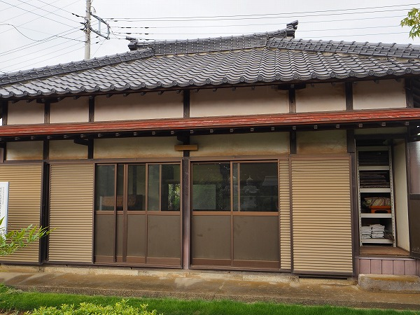
偶々庭を掃除していた堂守の方に話をしたら、中を見せてくれるとの事。やれありがたや。
一見、集会所のような雰囲気だが
絵馬堂、という事になっているようだ。
ではではお邪魔しますよ。
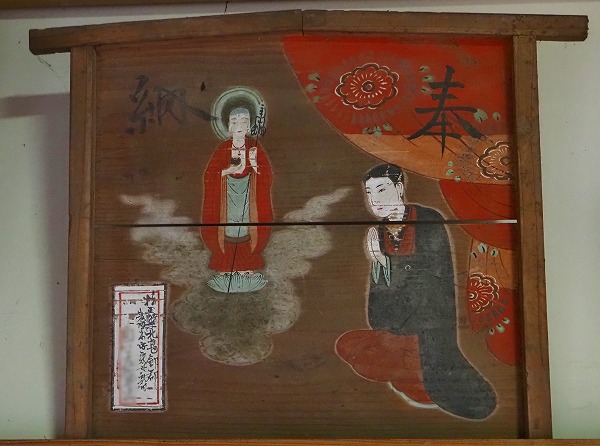
建物中には数点の絵馬が掲げられていた。
その多くは拝み絵馬だった。
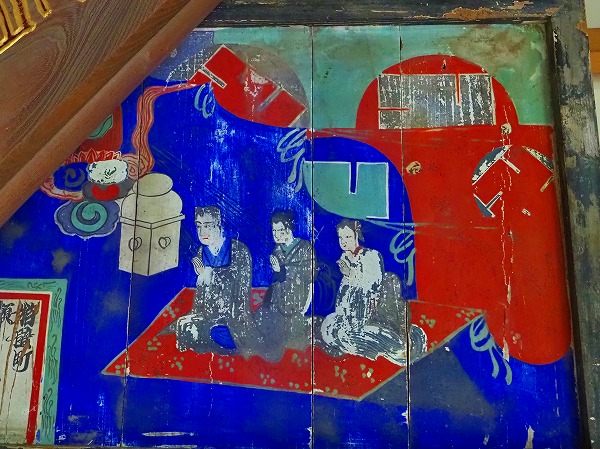
こちらは少し変わった絵馬。
背景が着物の柄を組み合わせたようなデザイナーの平面構成のような絵柄。
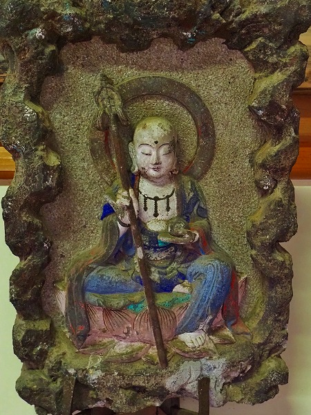
珍しい石で出来た絵馬。
彩色されており、彫刻としても出来が良い。
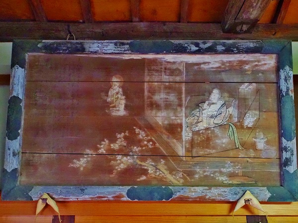
そしてこれが
間引き絵馬。
画面右の屋内にいるのが出産した女性。
屋外にいるのがそれを見ている地蔵尊、という画面構成。
お地蔵さんの左にスペースがあるが、そこには間引きを諫める文章が書かれているそうだ。
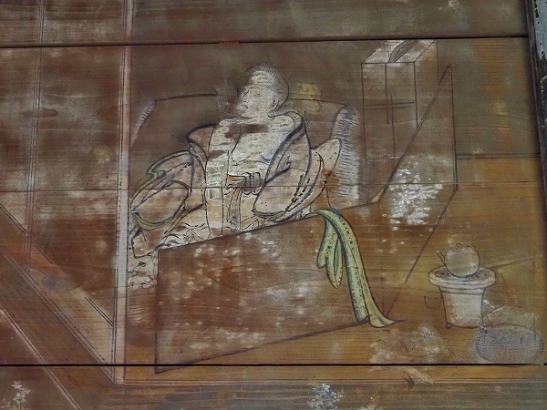
衝立の向こうで出産直後の女性が間引きをしている。
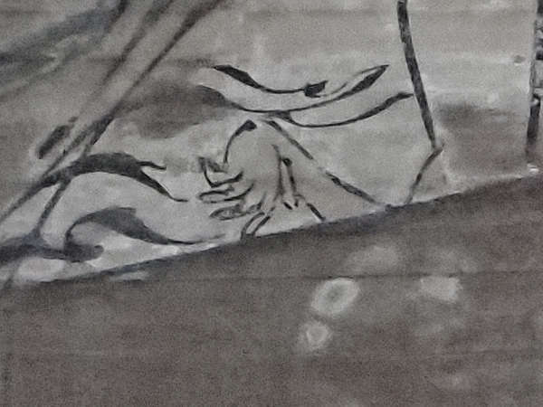
衝立の向こうに
不自然に捻じれた赤子の手が少しだけ見える。
今まさに母親の手によって命を失っているところなのだろう。
何とも切ない気持ちになる。
かなり退色しているので母親が鬼のような表情なのか、悲しい表情なのか、そこまでは判別できなかった。
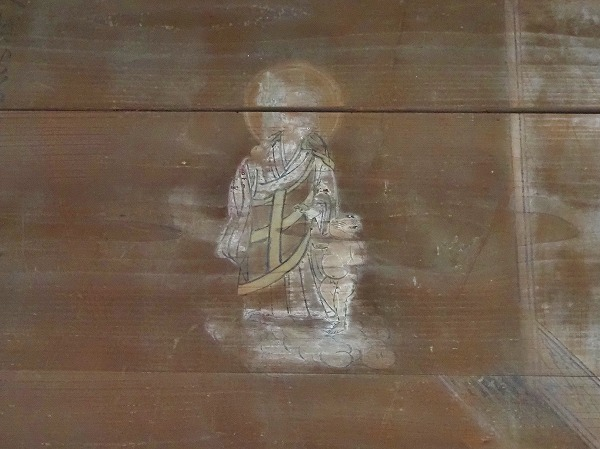
赤子を連れた地蔵菩薩。
殺人現場を描くというかなりセンセーショナルな絵馬なのだ。
このような絵馬は東日本の広範囲に存在するが、その内何点かはこの江戸川や利根川流域に見られる。
それだけこの辺りは厳しい土地柄だったのだろうか。
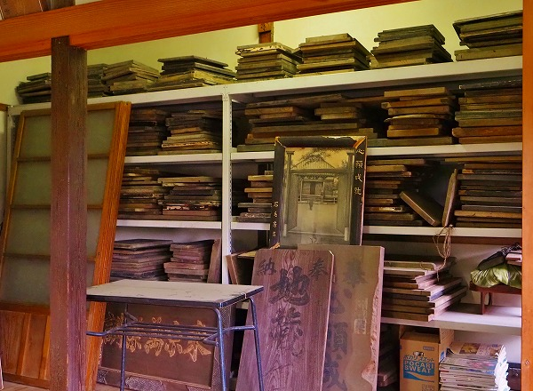
絵馬堂の片隅には沢山の絵馬が積み上げられていた。
ほとんどが文字だけが書かれたものだとか。
かつてはみなこの建物の中に架けられていたという。
見上げれば長押や梁に沢山のフックが付いていた。
昔はこの建物の中はこれらの絵馬でびっしり覆われていたのだろう。
絵馬堂のお次は
地蔵堂である。
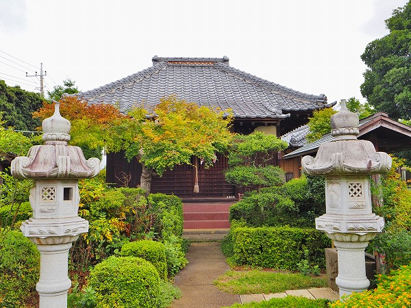
この地蔵尊の信仰圏は案外広く、江戸からも船に乗ってやってきたという。
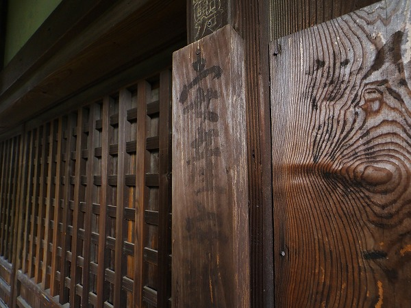
多くの人が安産を、そして産まれてきた子の成長を願って参詣に来たのだ。
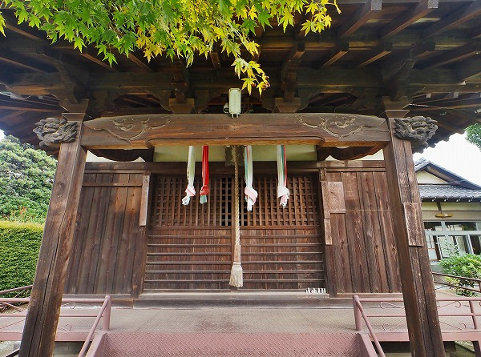
お堂の前に吊るされた紐もそういった人たちが奉納したのだろう。
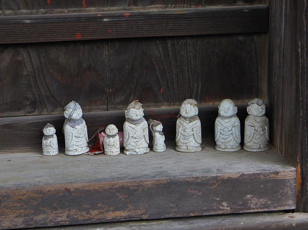
扉の片隅に並んでいるミニ地蔵。
で、堂内に入ってみる。
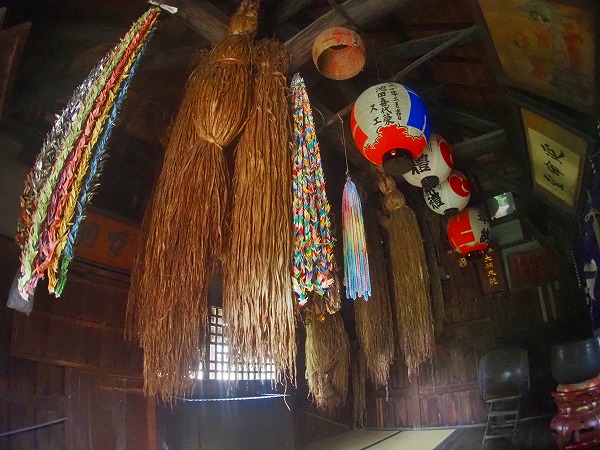
腰を抜かしそうになった。
巨大な「何か」の束が天井からたくさんぶら下がっているのだ。
しかもひとつやふたつではない。
外陣のほとんどを占めていて参拝者も端っこに座るしかないくらい。
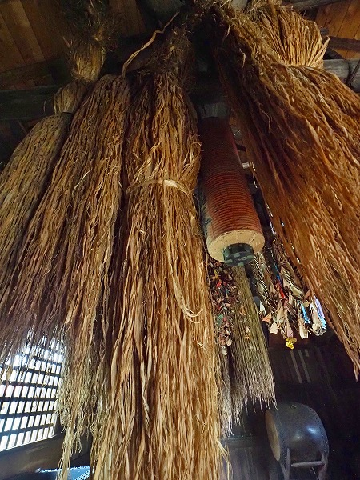
聞けばこの巨大な束は
麻の紐が束ねられたものだという。
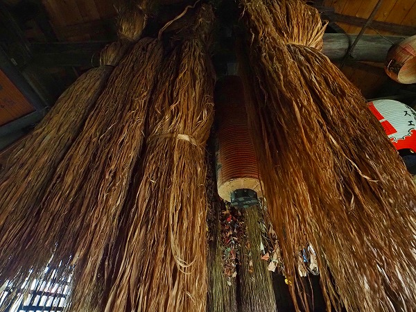
安産祈願のために参拝者は
麻の紐を一本御守りとして授かる。
そして無事お産が済んだら
御礼としてもう一本足して二本の麻紐を返礼するのだ。
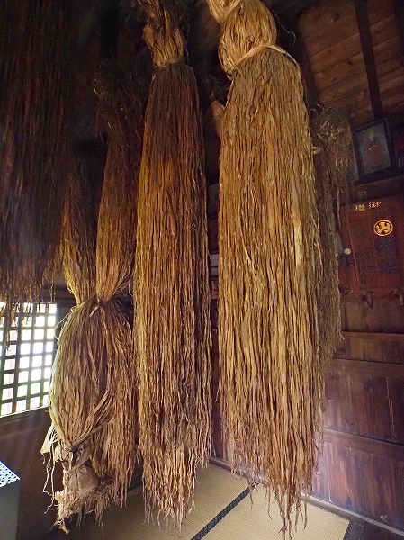
そうしていく内に麻紐はどんどん増えてこのような光景が生まれた、という訳。
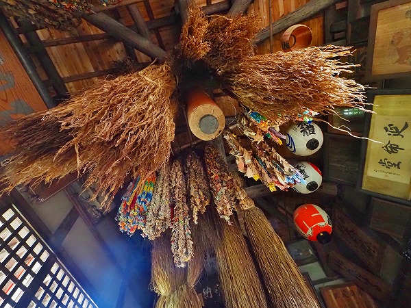
何故麻紐なのか？
それには理由がある。
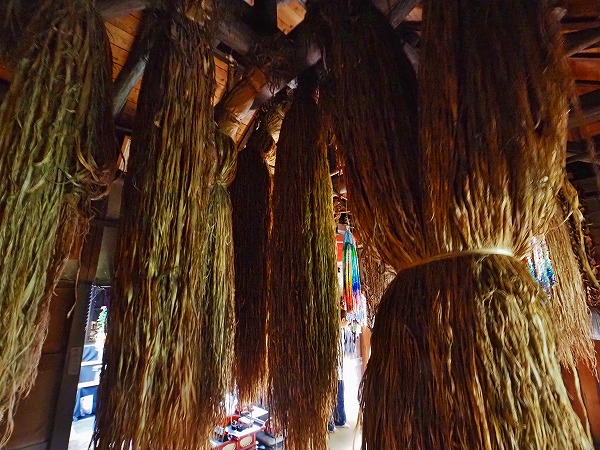
麻は古くより神事に使用されるように
神聖な植物とされている。
また魔除けとしての意味合いもある。
そして何よりも貧しい庶民でも
入手しやすい材料なのだ。
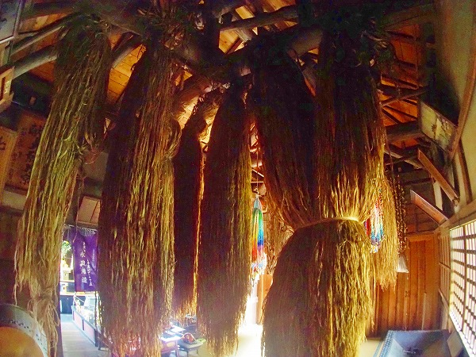
さらに
良く育ち切れないことから子供の成長や家族の絆を象徴しているとも考えられているのだ。
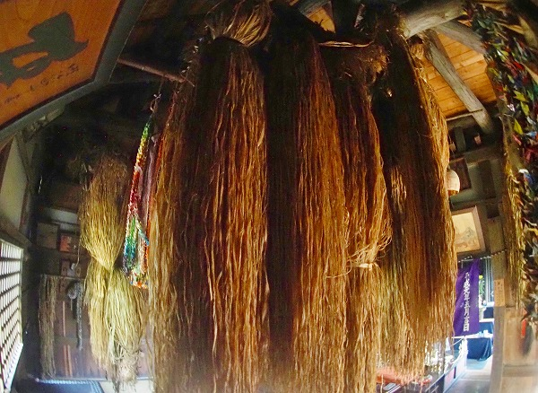
この大束、一束が数千本の麻紐で出来ているという。
この地蔵尊の信仰のガチ具合が伺える。
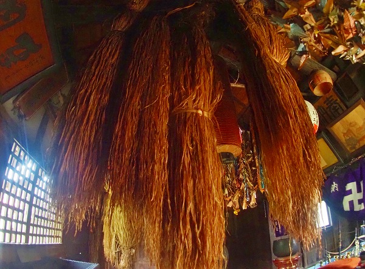
あまりにも長すぎて床につきそうなものまである。
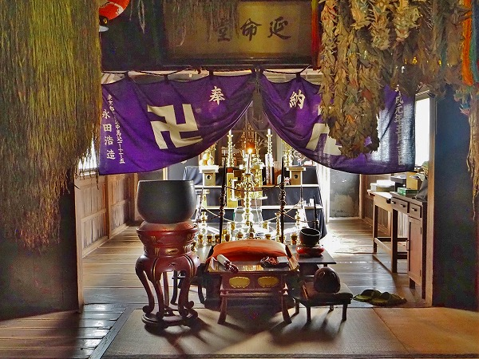
で、内陣。
護摩壇が組まれその奥に地蔵尊がある。
コレは前立てで、本尊の地蔵尊は厨子に入っていて祭りの日にしか見られないそうな。
帰りがけに出口近くの壁を見たら
髪の毛が奉納されているではないか。
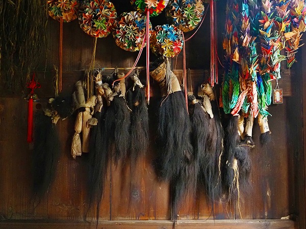
これは
徴兵除け、あるいは戦地に行った息子や夫が無事帰ってこれるように奉納したものだという。
日中、太平洋戦争のみならず日清日露戦争の頃のものもあるという。
自分の命を捧げるような気持ちで髪の毛を捧げたのだろう。
そう思うと身が引き締まるような思いになった。
間引きを諫める絵馬、この成長を願う麻紐、子の生還を願う毛髪、形は違えど
子を想う親の願いがびっしり詰まった空間だった。